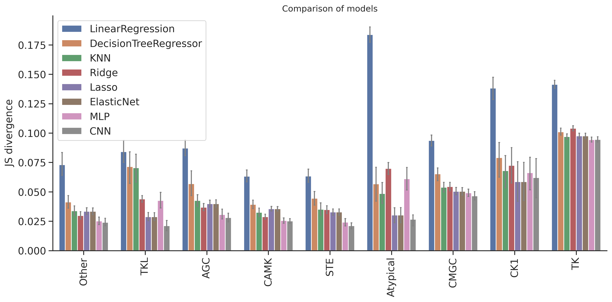

import numpy as np, pandas as pd
import os, random
from katlas.data import *
from katlas.train import *
from fastai.vision.all import *
from katlas.dnn import *DL training
Setup
seed_everything()def_device'cuda'Data
df=pd.read_parquet('train/pspa_t5.parquet')info=Data.get_kinase_info()
info = info[info.pseudo=='0']
info = info[info.kd_ID.notna()]
subfamily_map = info[['kd_ID','subfamily']].drop_duplicates().set_index('kd_ID')['subfamily']
family_map = info[['kd_ID','family']].drop_duplicates().set_index('kd_ID')['family']
group_map = info[['kd_ID','group']].drop_duplicates().set_index('kd_ID')['group']
pspa_info = pd.DataFrame(df.index.tolist(),columns=['kinase'])
pspa_info['subfamily'] = pspa_info.kinase.map(subfamily_map)
pspa_info['family'] = pspa_info.kinase.map(family_map)
pspa_info['group'] = pspa_info.kinase.map(group_map)df=df.reset_index()df.columnsIndex(['index', '-5P', '-4P', '-3P', '-2P', '-1P', '0P', '1P', '2P', '3P',
...
'T5_1014', 'T5_1015', 'T5_1016', 'T5_1017', 'T5_1018', 'T5_1019',
'T5_1020', 'T5_1021', 'T5_1022', 'T5_1023'],
dtype='object', length=1255)# column name of feature and target
feat_col = df.columns[df.columns.str.startswith('T5_')]
target_col = df.columns[~df.columns.isin(feat_col)][1:]feat_colIndex(['T5_0', 'T5_1', 'T5_2', 'T5_3', 'T5_4', 'T5_5', 'T5_6', 'T5_7', 'T5_8',
'T5_9',
...
'T5_1014', 'T5_1015', 'T5_1016', 'T5_1017', 'T5_1018', 'T5_1019',
'T5_1020', 'T5_1021', 'T5_1022', 'T5_1023'],
dtype='object', length=1024)Split
pspa_info.subfamily.value_counts()subfamily
Eph 12
Src 11
NEK 10
CK1 7
STE11 7
..
ZAK 1
Sev 1
Ret 1
Musk 1
Tie 1
Name: count, Length: 149, dtype: int64pspa_info.family.value_counts()family
STE20 27
CAMKL 20
CDK 17
MAPK 12
Eph 12
..
STK33 1
Sev 1
Ret 1
Musk 1
Tie 1
Name: count, Length: 92, dtype: int64pspa_info.group.value_counts()group
TK 78
CAMK 57
CMGC 52
AGC 52
Other 49
STE 39
TKL 25
CK1 11
Atypical 5
Name: count, dtype: int64splits = get_splits(pspa_info, group='group',nfold=9)
split0 = splits[0]GroupKFold(n_splits=9, random_state=None, shuffle=False)
# group in train set: 8
# group in test set: 1Dataset
# dataset
ds = GeneralDataset(df,feat_col,target_col)len(ds)368dl = DataLoader(ds, batch_size=64, shuffle=True)xb,yb = next(iter(dl))
xb.shape,yb.shape(torch.Size([64, 1024]), torch.Size([64, 23, 10]))Model
n_feature = len(feat_col)
n_target = len(target_col)def get_mlp(): return PSSM_model(n_feature,n_target,model='MLP')
def get_cnn(): return PSSM_model(n_feature,n_target,model='CNN')model = get_mlp()logits= model(xb)logits.shapetorch.Size([64, 23, 10])Loss
CE(logits,yb)tensor(3.2301, grad_fn=<MeanBackward0>)Metrics
KLD(logits,yb)tensor(0.4888, grad_fn=<MeanBackward0>)JSD(logits,yb)tensor(0.1021, grad_fn=<MeanBackward0>)CV train
cross-validation
oof_cnn = train_dl_cv(df,feat_col,target_col,
splits = splits,
model_func = get_cnn,
n_epoch=20,lr=3e-3,save='cnn')------fold0------
lr in training is 0.003| epoch | train_loss | valid_loss | KLD | JSD | time |
|---|---|---|---|---|---|
| 0 | 3.269060 | 3.143546 | 0.404984 | 0.081563 | 00:01 |
| 1 | 3.223692 | 3.146275 | 0.407714 | 0.083457 | 00:00 |
| 2 | 3.187206 | 3.183710 | 0.445149 | 0.089945 | 00:00 |
| 3 | 3.168466 | 3.213510 | 0.474949 | 0.095037 | 00:00 |
| 4 | 3.151428 | 3.250360 | 0.511799 | 0.095850 | 00:00 |
| 5 | 3.129077 | 3.295904 | 0.557343 | 0.096764 | 00:00 |
| 6 | 3.092045 | 3.379737 | 0.641176 | 0.100406 | 00:00 |
| 7 | 3.050153 | 3.463077 | 0.724516 | 0.097180 | 00:00 |
| 8 | 3.009927 | 3.508782 | 0.770221 | 0.096228 | 00:00 |
| 9 | 2.974360 | 3.530976 | 0.792415 | 0.096346 | 00:00 |
| 10 | 2.945237 | 3.551771 | 0.813210 | 0.095378 | 00:00 |
| 11 | 2.921331 | 3.561046 | 0.822485 | 0.096489 | 00:00 |
| 12 | 2.900862 | 3.570856 | 0.832295 | 0.096034 | 00:00 |
| 13 | 2.883971 | 3.571728 | 0.833167 | 0.096050 | 00:00 |
| 14 | 2.868740 | 3.580438 | 0.841878 | 0.096799 | 00:00 |
| 15 | 2.855896 | 3.576415 | 0.837854 | 0.095309 | 00:00 |
| 16 | 2.845092 | 3.576349 | 0.837788 | 0.095002 | 00:00 |
| 17 | 2.835977 | 3.578164 | 0.839603 | 0.094778 | 00:00 |
| 18 | 2.828240 | 3.578447 | 0.839886 | 0.094619 | 00:00 |
| 19 | 2.822063 | 3.577247 | 0.838686 | 0.094587 | 00:00 |
------fold1------
lr in training is 0.003| epoch | train_loss | valid_loss | KLD | JSD | time |
|---|---|---|---|---|---|
| 0 | 3.208323 | 3.117840 | 0.358446 | 0.079426 | 00:00 |
| 1 | 3.091189 | 2.972385 | 0.212993 | 0.053489 | 00:00 |
| 2 | 3.023240 | 2.914478 | 0.155085 | 0.036497 | 00:00 |
| 3 | 2.980670 | 2.882222 | 0.122829 | 0.028849 | 00:00 |
| 4 | 2.956968 | 2.892510 | 0.133117 | 0.031521 | 00:00 |
| 5 | 2.936406 | 2.883834 | 0.124441 | 0.029801 | 00:00 |
| 6 | 2.916521 | 2.872803 | 0.113411 | 0.026771 | 00:00 |
| 7 | 2.898817 | 2.867244 | 0.107851 | 0.025469 | 00:00 |
| 8 | 2.883082 | 2.871394 | 0.112001 | 0.026386 | 00:00 |
| 9 | 2.869339 | 2.879647 | 0.120254 | 0.028064 | 00:00 |
| 10 | 2.856960 | 2.873616 | 0.114223 | 0.026624 | 00:00 |
| 11 | 2.846230 | 2.867760 | 0.108367 | 0.025240 | 00:00 |
| 12 | 2.836640 | 2.872809 | 0.113416 | 0.026313 | 00:00 |
| 13 | 2.828191 | 2.868176 | 0.108783 | 0.025520 | 00:00 |
| 14 | 2.820981 | 2.872831 | 0.113438 | 0.026307 | 00:00 |
| 15 | 2.814202 | 2.866284 | 0.106891 | 0.024997 | 00:00 |
| 16 | 2.808656 | 2.866797 | 0.107404 | 0.025086 | 00:00 |
| 17 | 2.803644 | 2.865773 | 0.106380 | 0.024865 | 00:00 |
| 18 | 2.799526 | 2.866066 | 0.106673 | 0.024947 | 00:00 |
| 19 | 2.796277 | 2.867284 | 0.107891 | 0.025157 | 00:00 |
------fold2------
lr in training is 0.003| epoch | train_loss | valid_loss | KLD | JSD | time |
|---|---|---|---|---|---|
| 0 | 3.207325 | 3.115193 | 0.398589 | 0.086719 | 00:00 |
| 1 | 3.097927 | 2.949623 | 0.233019 | 0.056236 | 00:00 |
| 2 | 3.025309 | 2.879674 | 0.163071 | 0.036285 | 00:00 |
| 3 | 2.985648 | 2.917087 | 0.200483 | 0.043315 | 00:00 |
| 4 | 2.962924 | 2.954751 | 0.238148 | 0.049796 | 00:00 |
| 5 | 2.945866 | 2.895562 | 0.178958 | 0.039789 | 00:00 |
| 6 | 2.924970 | 2.849533 | 0.132929 | 0.030185 | 00:00 |
| 7 | 2.905612 | 2.830260 | 0.113657 | 0.025817 | 00:00 |
| 8 | 2.889499 | 2.844801 | 0.128197 | 0.029688 | 00:00 |
| 9 | 2.875663 | 2.833028 | 0.116424 | 0.026825 | 00:00 |
| 10 | 2.863242 | 2.841709 | 0.125106 | 0.029388 | 00:00 |
| 11 | 2.852891 | 2.840508 | 0.123904 | 0.028580 | 00:00 |
| 12 | 2.843964 | 2.835951 | 0.119348 | 0.027543 | 00:00 |
| 13 | 2.836050 | 2.836290 | 0.119687 | 0.027420 | 00:00 |
| 14 | 2.828768 | 2.840454 | 0.123851 | 0.028561 | 00:00 |
| 15 | 2.822232 | 2.843849 | 0.127245 | 0.029315 | 00:00 |
| 16 | 2.816713 | 2.839590 | 0.122987 | 0.028450 | 00:00 |
| 17 | 2.811558 | 2.837869 | 0.121266 | 0.028060 | 00:00 |
| 18 | 2.807289 | 2.837321 | 0.120717 | 0.027880 | 00:00 |
| 19 | 2.803516 | 2.837816 | 0.121213 | 0.027995 | 00:00 |
------fold3------
lr in training is 0.003| epoch | train_loss | valid_loss | KLD | JSD | time |
|---|---|---|---|---|---|
| 0 | 3.212177 | 3.133322 | 0.442178 | 0.092641 | 00:00 |
| 1 | 3.106556 | 3.004702 | 0.313558 | 0.071619 | 00:00 |
| 2 | 3.032302 | 2.924537 | 0.233393 | 0.047923 | 00:00 |
| 3 | 2.991408 | 2.954709 | 0.263565 | 0.050648 | 00:00 |
| 4 | 2.968174 | 2.931870 | 0.240725 | 0.048159 | 00:00 |
| 5 | 2.950806 | 2.916796 | 0.225652 | 0.045101 | 00:00 |
| 6 | 2.931854 | 2.925281 | 0.234136 | 0.044713 | 00:00 |
| 7 | 2.914292 | 2.914789 | 0.223645 | 0.044635 | 00:00 |
| 8 | 2.897355 | 2.928928 | 0.237784 | 0.045836 | 00:00 |
| 9 | 2.882802 | 2.949000 | 0.257856 | 0.049210 | 00:00 |
| 10 | 2.871844 | 2.924596 | 0.233452 | 0.045192 | 00:00 |
| 11 | 2.861349 | 2.941857 | 0.250713 | 0.045851 | 00:00 |
| 12 | 2.851713 | 2.931137 | 0.239993 | 0.045195 | 00:00 |
| 13 | 2.843136 | 2.934772 | 0.243628 | 0.046192 | 00:00 |
| 14 | 2.835923 | 2.943913 | 0.252769 | 0.046927 | 00:00 |
| 15 | 2.829265 | 2.942097 | 0.250953 | 0.045970 | 00:00 |
| 16 | 2.823912 | 2.941896 | 0.250752 | 0.046320 | 00:00 |
| 17 | 2.818480 | 2.941997 | 0.250853 | 0.046473 | 00:00 |
| 18 | 2.814164 | 2.941214 | 0.250070 | 0.046557 | 00:00 |
| 19 | 2.810336 | 2.940857 | 0.249713 | 0.046489 | 00:00 |
------fold4------
lr in training is 0.003| epoch | train_loss | valid_loss | KLD | JSD | time |
|---|---|---|---|---|---|
| 0 | 3.194705 | 3.130977 | 0.341532 | 0.074929 | 00:00 |
| 1 | 3.085594 | 2.977972 | 0.188527 | 0.048879 | 00:00 |
| 2 | 3.013692 | 2.913405 | 0.123960 | 0.030272 | 00:00 |
| 3 | 2.973788 | 2.917067 | 0.127621 | 0.030684 | 00:00 |
| 4 | 2.949276 | 2.918989 | 0.129544 | 0.030319 | 00:00 |
| 5 | 2.931125 | 2.899799 | 0.110354 | 0.025940 | 00:00 |
| 6 | 2.915670 | 2.903029 | 0.113584 | 0.026157 | 00:00 |
| 7 | 2.898051 | 2.902057 | 0.112611 | 0.026029 | 00:00 |
| 8 | 2.882174 | 2.906800 | 0.117355 | 0.026956 | 00:00 |
| 9 | 2.866555 | 2.902642 | 0.113197 | 0.026084 | 00:00 |
| 10 | 2.852777 | 2.896940 | 0.107495 | 0.024940 | 00:00 |
| 11 | 2.841741 | 2.897538 | 0.108094 | 0.024887 | 00:00 |
| 12 | 2.831769 | 2.893549 | 0.104104 | 0.024063 | 00:00 |
| 13 | 2.823283 | 2.896918 | 0.107473 | 0.024945 | 00:00 |
| 14 | 2.815448 | 2.890926 | 0.101481 | 0.023427 | 00:00 |
| 15 | 2.809115 | 2.893538 | 0.104093 | 0.024058 | 00:00 |
| 16 | 2.803209 | 2.894400 | 0.104955 | 0.024268 | 00:00 |
| 17 | 2.798704 | 2.892303 | 0.102858 | 0.023838 | 00:00 |
| 18 | 2.794743 | 2.893203 | 0.103758 | 0.024038 | 00:00 |
| 19 | 2.790997 | 2.892954 | 0.103509 | 0.023988 | 00:00 |
------fold5------
lr in training is 0.003| epoch | train_loss | valid_loss | KLD | JSD | time |
|---|---|---|---|---|---|
| 0 | 3.200059 | 3.129740 | 0.340930 | 0.074560 | 00:00 |
| 1 | 3.075892 | 2.966832 | 0.178021 | 0.046580 | 00:00 |
| 2 | 3.002707 | 2.912999 | 0.124188 | 0.030773 | 00:00 |
| 3 | 2.964410 | 2.892187 | 0.103376 | 0.024924 | 00:00 |
| 4 | 2.943762 | 2.902257 | 0.113446 | 0.027689 | 00:00 |
| 5 | 2.927169 | 2.901444 | 0.112634 | 0.027502 | 00:00 |
| 6 | 2.908855 | 2.900654 | 0.111842 | 0.027249 | 00:00 |
| 7 | 2.891726 | 2.897303 | 0.108493 | 0.026128 | 00:00 |
| 8 | 2.875688 | 2.877074 | 0.088263 | 0.021336 | 00:00 |
| 9 | 2.861317 | 2.884102 | 0.095291 | 0.023083 | 00:00 |
| 10 | 2.849794 | 2.875574 | 0.086763 | 0.021232 | 00:00 |
| 11 | 2.839657 | 2.886439 | 0.097628 | 0.023711 | 00:00 |
| 12 | 2.830924 | 2.874263 | 0.085452 | 0.020829 | 00:00 |
| 13 | 2.822428 | 2.873805 | 0.084994 | 0.020808 | 00:00 |
| 14 | 2.815482 | 2.876380 | 0.087570 | 0.021238 | 00:00 |
| 15 | 2.809337 | 2.879371 | 0.090560 | 0.022160 | 00:00 |
| 16 | 2.803722 | 2.876238 | 0.087428 | 0.021313 | 00:00 |
| 17 | 2.799258 | 2.875834 | 0.087023 | 0.021196 | 00:00 |
| 18 | 2.795357 | 2.876079 | 0.087268 | 0.021257 | 00:00 |
| 19 | 2.791848 | 2.875440 | 0.086629 | 0.021087 | 00:00 |
------fold6------
lr in training is 0.003| epoch | train_loss | valid_loss | KLD | JSD | time |
|---|---|---|---|---|---|
| 0 | 3.194345 | 3.125804 | 0.310537 | 0.070330 | 00:00 |
| 1 | 3.076619 | 2.947607 | 0.132340 | 0.035070 | 00:00 |
| 2 | 3.005765 | 2.965863 | 0.150596 | 0.034322 | 00:00 |
| 3 | 2.967664 | 2.947836 | 0.132569 | 0.031117 | 00:00 |
| 4 | 2.949170 | 2.930657 | 0.115390 | 0.027440 | 00:00 |
| 5 | 2.929431 | 2.919086 | 0.103819 | 0.023647 | 00:00 |
| 6 | 2.909898 | 2.909945 | 0.094679 | 0.022008 | 00:00 |
| 7 | 2.889873 | 2.941175 | 0.125908 | 0.030769 | 00:00 |
| 8 | 2.872821 | 3.019504 | 0.204238 | 0.042314 | 00:00 |
| 9 | 2.857681 | 3.009388 | 0.194121 | 0.037455 | 00:00 |
| 10 | 2.845142 | 3.022245 | 0.206979 | 0.038697 | 00:00 |
| 11 | 2.835162 | 3.000225 | 0.184959 | 0.035884 | 00:00 |
| 12 | 2.826885 | 2.913549 | 0.098283 | 0.022825 | 00:00 |
| 13 | 2.818968 | 2.909821 | 0.094554 | 0.022073 | 00:00 |
| 14 | 2.812242 | 2.911905 | 0.096639 | 0.022330 | 00:00 |
| 15 | 2.806073 | 2.905437 | 0.090171 | 0.021060 | 00:00 |
| 16 | 2.800760 | 2.906015 | 0.090748 | 0.021134 | 00:00 |
| 17 | 2.796509 | 2.906666 | 0.091399 | 0.021194 | 00:00 |
| 18 | 2.792567 | 2.907202 | 0.091935 | 0.021378 | 00:00 |
| 19 | 2.789075 | 2.906040 | 0.090773 | 0.021116 | 00:00 |
------fold7------
lr in training is 0.003| epoch | train_loss | valid_loss | KLD | JSD | time |
|---|---|---|---|---|---|
| 0 | 3.193431 | 3.132979 | 0.470934 | 0.100316 | 00:00 |
| 1 | 3.075129 | 2.952929 | 0.290884 | 0.064314 | 00:00 |
| 2 | 3.004288 | 2.980430 | 0.318384 | 0.064712 | 00:00 |
| 3 | 2.964430 | 3.106791 | 0.444746 | 0.087948 | 00:00 |
| 4 | 2.943281 | 3.030717 | 0.368672 | 0.071883 | 00:00 |
| 5 | 2.921506 | 2.966967 | 0.304921 | 0.064954 | 00:00 |
| 6 | 2.901086 | 2.966125 | 0.304080 | 0.066394 | 00:00 |
| 7 | 2.882934 | 2.906911 | 0.244865 | 0.056612 | 00:00 |
| 8 | 2.866958 | 2.959419 | 0.297374 | 0.067109 | 00:00 |
| 9 | 2.853956 | 2.950435 | 0.288389 | 0.062158 | 00:00 |
| 10 | 2.842523 | 2.916209 | 0.254164 | 0.058917 | 00:00 |
| 11 | 2.833035 | 2.969146 | 0.307100 | 0.066712 | 00:00 |
| 12 | 2.824414 | 2.963351 | 0.301306 | 0.066902 | 00:00 |
| 13 | 2.817049 | 2.939359 | 0.277314 | 0.059954 | 00:00 |
| 14 | 2.810813 | 2.942940 | 0.280895 | 0.062915 | 00:00 |
| 15 | 2.805465 | 2.947105 | 0.285059 | 0.062276 | 00:00 |
| 16 | 2.800686 | 2.942368 | 0.280322 | 0.061662 | 00:00 |
| 17 | 2.796548 | 2.940688 | 0.278642 | 0.061684 | 00:00 |
| 18 | 2.793428 | 2.938184 | 0.276139 | 0.061416 | 00:00 |
| 19 | 2.790892 | 2.941559 | 0.279513 | 0.062046 | 00:00 |
------fold8------
lr in training is 0.003| epoch | train_loss | valid_loss | KLD | JSD | time |
|---|---|---|---|---|---|
| 0 | 3.204335 | 3.128751 | 0.330619 | 0.071953 | 00:00 |
| 1 | 3.082736 | 2.936792 | 0.138660 | 0.031960 | 00:00 |
| 2 | 3.005778 | 2.975837 | 0.177705 | 0.038728 | 00:00 |
| 3 | 2.966585 | 2.978967 | 0.180836 | 0.040213 | 00:00 |
| 4 | 2.941424 | 2.933694 | 0.135562 | 0.028999 | 00:00 |
| 5 | 2.919094 | 2.920082 | 0.121951 | 0.026912 | 00:00 |
| 6 | 2.902150 | 2.910596 | 0.112464 | 0.024009 | 00:00 |
| 7 | 2.884098 | 2.900814 | 0.102682 | 0.022055 | 00:00 |
| 8 | 2.867814 | 2.900837 | 0.102706 | 0.022942 | 00:00 |
| 9 | 2.854059 | 2.904717 | 0.106585 | 0.023494 | 00:00 |
| 10 | 2.842533 | 2.899587 | 0.101455 | 0.022210 | 00:00 |
| 11 | 2.836719 | 2.903193 | 0.105061 | 0.023006 | 00:00 |
| 12 | 2.828672 | 2.906362 | 0.108229 | 0.024207 | 00:00 |
| 13 | 2.820787 | 2.915592 | 0.117460 | 0.026719 | 00:00 |
| 14 | 2.813905 | 2.919409 | 0.121277 | 0.027612 | 00:00 |
| 15 | 2.807625 | 2.913126 | 0.114994 | 0.026046 | 00:00 |
| 16 | 2.802210 | 2.911582 | 0.113450 | 0.025277 | 00:00 |
| 17 | 2.797727 | 2.912738 | 0.114606 | 0.025724 | 00:00 |
| 18 | 2.794279 | 2.921650 | 0.123518 | 0.028250 | 00:00 |
| 19 | 2.791564 | 2.915612 | 0.117481 | 0.026559 | 00:00 |
oof_mlp = train_dl_cv(df,feat_col,target_col,
splits = splits,
model_func = get_mlp,
n_epoch=20,lr=3e-3,save='mlp')------fold0------
lr in training is 0.003| epoch | train_loss | valid_loss | KLD | JSD | time |
|---|---|---|---|---|---|
| 0 | 3.171476 | 3.139420 | 0.400859 | 0.080985 | 00:00 |
| 1 | 3.106711 | 3.147713 | 0.409152 | 0.082218 | 00:00 |
| 2 | 3.038125 | 3.160561 | 0.422000 | 0.083707 | 00:00 |
| 3 | 2.976095 | 3.189467 | 0.450906 | 0.085103 | 00:00 |
| 4 | 2.928933 | 3.253317 | 0.514756 | 0.087918 | 00:00 |
| 5 | 2.895859 | 3.290741 | 0.552180 | 0.087818 | 00:00 |
| 6 | 2.871152 | 3.370811 | 0.632249 | 0.091517 | 00:00 |
| 7 | 2.852960 | 3.411198 | 0.672637 | 0.090949 | 00:00 |
| 8 | 2.838817 | 3.496814 | 0.758253 | 0.091359 | 00:00 |
| 9 | 2.827737 | 3.521644 | 0.783083 | 0.093565 | 00:00 |
| 10 | 2.818174 | 3.498032 | 0.759471 | 0.093064 | 00:00 |
| 11 | 2.810489 | 3.504961 | 0.766400 | 0.094115 | 00:00 |
| 12 | 2.803670 | 3.508696 | 0.770135 | 0.092760 | 00:00 |
| 13 | 2.797866 | 3.541964 | 0.803403 | 0.094965 | 00:00 |
| 14 | 2.792816 | 3.547325 | 0.808764 | 0.094005 | 00:00 |
| 15 | 2.788567 | 3.548905 | 0.810344 | 0.094359 | 00:00 |
| 16 | 2.784840 | 3.552236 | 0.813675 | 0.094531 | 00:00 |
| 17 | 2.781688 | 3.556740 | 0.818179 | 0.094105 | 00:00 |
| 18 | 2.779126 | 3.557160 | 0.818599 | 0.094202 | 00:00 |
| 19 | 2.776936 | 3.562564 | 0.824003 | 0.094342 | 00:00 |
------fold1------
lr in training is 0.003| epoch | train_loss | valid_loss | KLD | JSD | time |
|---|---|---|---|---|---|
| 0 | 3.138040 | 3.135045 | 0.375653 | 0.082271 | 00:00 |
| 1 | 3.054276 | 3.113542 | 0.354149 | 0.079574 | 00:00 |
| 2 | 2.989687 | 3.048094 | 0.288702 | 0.069778 | 00:00 |
| 3 | 2.937330 | 2.952537 | 0.193144 | 0.050103 | 00:00 |
| 4 | 2.901045 | 2.872171 | 0.112778 | 0.028355 | 00:00 |
| 5 | 2.875492 | 2.863093 | 0.103700 | 0.025160 | 00:00 |
| 6 | 2.856277 | 2.865705 | 0.106313 | 0.025039 | 00:00 |
| 7 | 2.840961 | 2.864216 | 0.104823 | 0.024369 | 00:00 |
| 8 | 2.829274 | 2.864235 | 0.104842 | 0.024402 | 00:00 |
| 9 | 2.820478 | 2.877947 | 0.118554 | 0.027575 | 00:00 |
| 10 | 2.812226 | 2.873299 | 0.113906 | 0.026126 | 00:00 |
| 11 | 2.806044 | 2.869767 | 0.110374 | 0.025534 | 00:00 |
| 12 | 2.800019 | 2.872890 | 0.113498 | 0.026378 | 00:00 |
| 13 | 2.794942 | 2.871101 | 0.111708 | 0.025842 | 00:00 |
| 14 | 2.790824 | 2.871950 | 0.112557 | 0.025829 | 00:00 |
| 15 | 2.786819 | 2.872271 | 0.112878 | 0.025944 | 00:00 |
| 16 | 2.783419 | 2.869001 | 0.109608 | 0.025354 | 00:00 |
| 17 | 2.780620 | 2.871257 | 0.111864 | 0.025823 | 00:00 |
| 18 | 2.778407 | 2.871228 | 0.111836 | 0.025827 | 00:00 |
| 19 | 2.776483 | 2.869788 | 0.110395 | 0.025548 | 00:00 |
------fold2------
lr in training is 0.003| epoch | train_loss | valid_loss | KLD | JSD | time |
|---|---|---|---|---|---|
| 0 | 3.132754 | 3.134609 | 0.418006 | 0.089472 | 00:00 |
| 1 | 3.046801 | 3.113223 | 0.396620 | 0.086776 | 00:00 |
| 2 | 2.980770 | 3.055556 | 0.338953 | 0.078529 | 00:00 |
| 3 | 2.932360 | 2.969013 | 0.252410 | 0.062473 | 00:00 |
| 4 | 2.899219 | 2.899032 | 0.182429 | 0.046023 | 00:00 |
| 5 | 2.875994 | 2.873559 | 0.156956 | 0.038564 | 00:00 |
| 6 | 2.858054 | 2.845880 | 0.129277 | 0.030850 | 00:00 |
| 7 | 2.844874 | 2.827710 | 0.111107 | 0.026074 | 00:00 |
| 8 | 2.834472 | 2.832326 | 0.115723 | 0.026925 | 00:00 |
| 9 | 2.826840 | 2.842240 | 0.125637 | 0.030043 | 00:00 |
| 10 | 2.819004 | 2.836573 | 0.119970 | 0.027737 | 00:00 |
| 11 | 2.812238 | 2.861251 | 0.144647 | 0.033234 | 00:00 |
| 12 | 2.806651 | 2.852784 | 0.136180 | 0.031518 | 00:00 |
| 13 | 2.801448 | 2.847494 | 0.130891 | 0.030155 | 00:00 |
| 14 | 2.796698 | 2.846005 | 0.129401 | 0.029958 | 00:00 |
| 15 | 2.792893 | 2.848514 | 0.131910 | 0.030794 | 00:00 |
| 16 | 2.789678 | 2.848055 | 0.131451 | 0.030317 | 00:00 |
| 17 | 2.786758 | 2.846974 | 0.130371 | 0.030086 | 00:00 |
| 18 | 2.784590 | 2.847528 | 0.130924 | 0.030296 | 00:00 |
| 19 | 2.782532 | 2.848963 | 0.132360 | 0.030637 | 00:00 |
------fold3------
lr in training is 0.003| epoch | train_loss | valid_loss | KLD | JSD | time |
|---|---|---|---|---|---|
| 0 | 3.123281 | 3.132412 | 0.441268 | 0.092814 | 00:00 |
| 1 | 3.042101 | 3.114030 | 0.422886 | 0.090477 | 00:00 |
| 2 | 2.979384 | 3.074581 | 0.383437 | 0.084360 | 00:00 |
| 3 | 2.931671 | 3.003192 | 0.312048 | 0.069243 | 00:00 |
| 4 | 2.900101 | 2.941841 | 0.250697 | 0.052327 | 00:00 |
| 5 | 2.877186 | 2.922068 | 0.230924 | 0.046006 | 00:00 |
| 6 | 2.860131 | 2.931553 | 0.240409 | 0.046516 | 00:00 |
| 7 | 2.847045 | 2.928376 | 0.237232 | 0.045358 | 00:00 |
| 8 | 2.836282 | 2.931814 | 0.240670 | 0.045169 | 00:00 |
| 9 | 2.827431 | 2.939419 | 0.248275 | 0.048628 | 00:00 |
| 10 | 2.819919 | 2.932438 | 0.241293 | 0.046815 | 00:00 |
| 11 | 2.814036 | 2.933811 | 0.242668 | 0.046418 | 00:00 |
| 12 | 2.808680 | 2.934338 | 0.243193 | 0.046852 | 00:00 |
| 13 | 2.804248 | 2.950339 | 0.259195 | 0.049754 | 00:00 |
| 14 | 2.799972 | 2.938487 | 0.247342 | 0.046829 | 00:00 |
| 15 | 2.796435 | 2.941572 | 0.250428 | 0.048000 | 00:00 |
| 16 | 2.793111 | 2.947199 | 0.256055 | 0.048709 | 00:00 |
| 17 | 2.790409 | 2.951463 | 0.260318 | 0.049281 | 00:00 |
| 18 | 2.788168 | 2.950207 | 0.259063 | 0.049058 | 00:00 |
| 19 | 2.786237 | 2.950060 | 0.258915 | 0.049077 | 00:00 |
------fold4------
lr in training is 0.003| epoch | train_loss | valid_loss | KLD | JSD | time |
|---|---|---|---|---|---|
| 0 | 3.124104 | 3.134452 | 0.345007 | 0.075167 | 00:00 |
| 1 | 3.038496 | 3.111592 | 0.322147 | 0.072473 | 00:00 |
| 2 | 2.970284 | 3.048591 | 0.259146 | 0.063065 | 00:00 |
| 3 | 2.920771 | 2.958019 | 0.168574 | 0.043953 | 00:00 |
| 4 | 2.887409 | 2.898182 | 0.108737 | 0.026950 | 00:00 |
| 5 | 2.863338 | 2.887498 | 0.098053 | 0.023644 | 00:00 |
| 6 | 2.845474 | 2.888538 | 0.099093 | 0.023433 | 00:00 |
| 7 | 2.831556 | 2.886909 | 0.097464 | 0.022886 | 00:00 |
| 8 | 2.819985 | 2.892709 | 0.103265 | 0.024001 | 00:00 |
| 9 | 2.810792 | 2.892037 | 0.102592 | 0.023989 | 00:00 |
| 10 | 2.803365 | 2.895198 | 0.105753 | 0.024882 | 00:00 |
| 11 | 2.797357 | 2.895902 | 0.106457 | 0.024947 | 00:00 |
| 12 | 2.792247 | 2.894876 | 0.105431 | 0.024678 | 00:00 |
| 13 | 2.787674 | 2.896597 | 0.107152 | 0.025046 | 00:00 |
| 14 | 2.783528 | 2.894453 | 0.105008 | 0.024469 | 00:00 |
| 15 | 2.780488 | 2.896704 | 0.107259 | 0.025280 | 00:00 |
| 16 | 2.777241 | 2.896692 | 0.107246 | 0.025114 | 00:00 |
| 17 | 2.774627 | 2.895978 | 0.106533 | 0.024936 | 00:00 |
| 18 | 2.772030 | 2.896508 | 0.107063 | 0.025073 | 00:00 |
| 19 | 2.770392 | 2.896650 | 0.107205 | 0.025118 | 00:00 |
------fold5------
lr in training is 0.003| epoch | train_loss | valid_loss | KLD | JSD | time |
|---|---|---|---|---|---|
| 0 | 3.140697 | 3.135143 | 0.346332 | 0.075070 | 00:00 |
| 1 | 3.048342 | 3.119731 | 0.330920 | 0.073235 | 00:00 |
| 2 | 2.979255 | 3.078922 | 0.290112 | 0.067775 | 00:00 |
| 3 | 2.929077 | 2.995795 | 0.206985 | 0.052510 | 00:00 |
| 4 | 2.893279 | 2.975678 | 0.186867 | 0.047241 | 00:00 |
| 5 | 2.868217 | 2.886815 | 0.098004 | 0.024602 | 00:00 |
| 6 | 2.849210 | 2.916328 | 0.127517 | 0.032733 | 00:00 |
| 7 | 2.835844 | 2.884094 | 0.095283 | 0.024124 | 00:00 |
| 8 | 2.824802 | 2.893069 | 0.104258 | 0.026342 | 00:00 |
| 9 | 2.815038 | 2.909672 | 0.120861 | 0.030394 | 00:00 |
| 10 | 2.806904 | 2.879725 | 0.090915 | 0.022690 | 00:00 |
| 11 | 2.800042 | 2.910357 | 0.121546 | 0.030322 | 00:00 |
| 12 | 2.794713 | 2.887380 | 0.098569 | 0.024505 | 00:00 |
| 13 | 2.789812 | 2.891015 | 0.102204 | 0.025047 | 00:00 |
| 14 | 2.785572 | 2.883691 | 0.094880 | 0.023556 | 00:00 |
| 15 | 2.781896 | 2.886951 | 0.098140 | 0.024198 | 00:00 |
| 16 | 2.778671 | 2.888133 | 0.099322 | 0.024640 | 00:00 |
| 17 | 2.775967 | 2.890878 | 0.102067 | 0.025343 | 00:00 |
| 18 | 2.773479 | 2.889570 | 0.100760 | 0.025070 | 00:00 |
| 19 | 2.771580 | 2.886280 | 0.097469 | 0.024140 | 00:00 |
------fold6------
lr in training is 0.003| epoch | train_loss | valid_loss | KLD | JSD | time |
|---|---|---|---|---|---|
| 0 | 3.125239 | 3.143044 | 0.327778 | 0.072367 | 00:00 |
| 1 | 3.036369 | 3.146004 | 0.330738 | 0.072551 | 00:00 |
| 2 | 2.969717 | 3.142249 | 0.326983 | 0.071680 | 00:00 |
| 3 | 2.921383 | 3.125622 | 0.310355 | 0.069347 | 00:00 |
| 4 | 2.886705 | 3.119030 | 0.303763 | 0.067855 | 00:00 |
| 5 | 2.863236 | 3.150701 | 0.335434 | 0.069734 | 00:00 |
| 6 | 2.846394 | 3.105358 | 0.290092 | 0.062999 | 00:00 |
| 7 | 2.833611 | 3.020862 | 0.205595 | 0.049413 | 00:00 |
| 8 | 2.822827 | 3.081616 | 0.266349 | 0.058375 | 00:00 |
| 9 | 2.814345 | 3.046980 | 0.231713 | 0.052382 | 00:00 |
| 10 | 2.806578 | 3.069500 | 0.254233 | 0.056023 | 00:00 |
| 11 | 2.800230 | 3.049825 | 0.234558 | 0.052775 | 00:00 |
| 12 | 2.794504 | 3.000489 | 0.185222 | 0.044598 | 00:00 |
| 13 | 2.790055 | 3.022670 | 0.207403 | 0.048725 | 00:00 |
| 14 | 2.786135 | 3.001585 | 0.186319 | 0.044600 | 00:00 |
| 15 | 2.782260 | 2.999725 | 0.184458 | 0.044126 | 00:00 |
| 16 | 2.778924 | 2.977914 | 0.162648 | 0.039644 | 00:00 |
| 17 | 2.775975 | 2.984549 | 0.169282 | 0.041061 | 00:00 |
| 18 | 2.773758 | 2.973586 | 0.158320 | 0.038846 | 00:00 |
| 19 | 2.772370 | 2.993045 | 0.177778 | 0.042562 | 00:00 |
------fold7------
lr in training is 0.003| epoch | train_loss | valid_loss | KLD | JSD | time |
|---|---|---|---|---|---|
| 0 | 3.110090 | 3.133375 | 0.471330 | 0.100618 | 00:00 |
| 1 | 3.027103 | 3.102594 | 0.440548 | 0.096998 | 00:00 |
| 2 | 2.965780 | 3.024230 | 0.362184 | 0.084081 | 00:00 |
| 3 | 2.917700 | 2.935767 | 0.273722 | 0.061535 | 00:00 |
| 4 | 2.885562 | 2.921035 | 0.258989 | 0.056032 | 00:00 |
| 5 | 2.862646 | 2.910833 | 0.248788 | 0.054900 | 00:00 |
| 6 | 2.845487 | 2.937936 | 0.275890 | 0.060785 | 00:00 |
| 7 | 2.832792 | 2.922657 | 0.260612 | 0.060340 | 00:00 |
| 8 | 2.822367 | 2.944104 | 0.282059 | 0.066009 | 00:00 |
| 9 | 2.813707 | 2.972666 | 0.310620 | 0.072871 | 00:00 |
| 10 | 2.806854 | 2.938702 | 0.276657 | 0.063607 | 00:00 |
| 11 | 2.800919 | 2.948178 | 0.286132 | 0.065070 | 00:00 |
| 12 | 2.795901 | 2.972046 | 0.310000 | 0.071711 | 00:00 |
| 13 | 2.791595 | 2.929130 | 0.267084 | 0.062957 | 00:00 |
| 14 | 2.787729 | 2.940015 | 0.277970 | 0.065189 | 00:00 |
| 15 | 2.784400 | 2.937132 | 0.275087 | 0.064643 | 00:00 |
| 16 | 2.781541 | 2.944604 | 0.282558 | 0.066189 | 00:00 |
| 17 | 2.779098 | 2.947384 | 0.285339 | 0.066931 | 00:00 |
| 18 | 2.777092 | 2.944833 | 0.282787 | 0.066404 | 00:00 |
| 19 | 2.775365 | 2.944260 | 0.282215 | 0.066229 | 00:00 |
------fold8------
lr in training is 0.003| epoch | train_loss | valid_loss | KLD | JSD | time |
|---|---|---|---|---|---|
| 0 | 3.140649 | 3.132743 | 0.334611 | 0.072549 | 00:00 |
| 1 | 3.045759 | 3.118004 | 0.319872 | 0.070753 | 00:00 |
| 2 | 2.977565 | 3.083817 | 0.285684 | 0.065886 | 00:00 |
| 3 | 2.924772 | 3.019604 | 0.221472 | 0.054484 | 00:00 |
| 4 | 2.889525 | 3.027496 | 0.229364 | 0.055167 | 00:00 |
| 5 | 2.864700 | 3.021855 | 0.223723 | 0.052769 | 00:00 |
| 6 | 2.847138 | 3.056512 | 0.258380 | 0.059230 | 00:00 |
| 7 | 2.833452 | 3.042546 | 0.244414 | 0.056720 | 00:00 |
| 8 | 2.822788 | 3.159932 | 0.361800 | 0.073176 | 00:00 |
| 9 | 2.814126 | 3.136939 | 0.338807 | 0.071001 | 00:00 |
| 10 | 2.806904 | 3.083386 | 0.285255 | 0.064539 | 00:00 |
| 11 | 2.800378 | 3.071976 | 0.273844 | 0.062171 | 00:00 |
| 12 | 2.794891 | 3.084828 | 0.286696 | 0.064775 | 00:00 |
| 13 | 2.790077 | 3.075835 | 0.277704 | 0.062719 | 00:00 |
| 14 | 2.785990 | 3.074905 | 0.276773 | 0.062855 | 00:00 |
| 15 | 2.782810 | 3.051820 | 0.253688 | 0.058684 | 00:00 |
| 16 | 2.779867 | 3.048082 | 0.249950 | 0.057938 | 00:00 |
| 17 | 2.777103 | 3.049922 | 0.251790 | 0.058291 | 00:00 |
| 18 | 2.775033 | 3.048445 | 0.250313 | 0.058125 | 00:00 |
| 19 | 2.773071 | 3.064700 | 0.266568 | 0.061091 | 00:00 |
ML
from sklearn.neighbors import *
from sklearn.linear_model import *
from sklearn.tree import *
from sklearn.svm import *
from sklearn.ensemble import *
from sklearn.multioutput import MultiOutputRegressorml_models = {
'LinearRegression': LinearRegression(),
'Lasso': Lasso(0.1), # L1 regularization # changing alpha does not change the result
'Ridge': Ridge(alpha=0.1), # L2 regularization
'ElasticNet': ElasticNet(0.1), # Combine L1 and L2
# 'SVR':SVR(C=10,gamma=1),
'DecisionTreeRegressor': DecisionTreeRegressor(), # not very good
'KNN': KNeighborsRegressor(n_neighbors=3), # compared with others, n=3 gives the best results
# 'XGBRegressor': XGBRegressor(), #slow without gpu
# 'RandomForestRegressor': RandomForestRegressor() # slow, use cuml to use gpu
}oofs_ml = {}for name,model in ml_models.items():
oofs_ml[name] = train_ml_cv(df, feat_col, target_col, splits, model)/home/sky1ove/git/KATLAS/katlas/.venv/lib/python3.12/site-packages/logomaker/../sklearn/linear_model/_coordinate_descent.py:695: ConvergenceWarning: Objective did not converge. You might want to increase the number of iterations, check the scale of the features or consider increasing regularisation. Duality gap: 0.000e+00, tolerance: 0.000e+00
model = cd_fast.enet_coordinate_descent(
/home/sky1ove/git/KATLAS/katlas/.venv/lib/python3.12/site-packages/logomaker/../sklearn/linear_model/_coordinate_descent.py:695: ConvergenceWarning: Objective did not converge. You might want to increase the number of iterations, check the scale of the features or consider increasing regularisation. Duality gap: 0.000e+00, tolerance: 0.000e+00
model = cd_fast.enet_coordinate_descent(
/home/sky1ove/git/KATLAS/katlas/.venv/lib/python3.12/site-packages/logomaker/../sklearn/linear_model/_coordinate_descent.py:695: ConvergenceWarning: Objective did not converge. You might want to increase the number of iterations, check the scale of the features or consider increasing regularisation. Duality gap: 0.000e+00, tolerance: 0.000e+00
model = cd_fast.enet_coordinate_descent(
/home/sky1ove/git/KATLAS/katlas/.venv/lib/python3.12/site-packages/logomaker/../sklearn/linear_model/_coordinate_descent.py:695: ConvergenceWarning: Objective did not converge. You might want to increase the number of iterations, check the scale of the features or consider increasing regularisation. Duality gap: 0.000e+00, tolerance: 0.000e+00
model = cd_fast.enet_coordinate_descent(
/home/sky1ove/git/KATLAS/katlas/.venv/lib/python3.12/site-packages/logomaker/../sklearn/linear_model/_coordinate_descent.py:695: ConvergenceWarning: Objective did not converge. You might want to increase the number of iterations, check the scale of the features or consider increasing regularisation. Duality gap: 0.000e+00, tolerance: 0.000e+00
model = cd_fast.enet_coordinate_descent(
/home/sky1ove/git/KATLAS/katlas/.venv/lib/python3.12/site-packages/logomaker/../sklearn/linear_model/_coordinate_descent.py:695: ConvergenceWarning: Objective did not converge. You might want to increase the number of iterations, check the scale of the features or consider increasing regularisation. Duality gap: 0.000e+00, tolerance: 0.000e+00
model = cd_fast.enet_coordinate_descent(
/home/sky1ove/git/KATLAS/katlas/.venv/lib/python3.12/site-packages/logomaker/../sklearn/linear_model/_coordinate_descent.py:695: ConvergenceWarning: Objective did not converge. You might want to increase the number of iterations, check the scale of the features or consider increasing regularisation. Duality gap: 0.000e+00, tolerance: 0.000e+00
model = cd_fast.enet_coordinate_descent(
/home/sky1ove/git/KATLAS/katlas/.venv/lib/python3.12/site-packages/logomaker/../sklearn/linear_model/_coordinate_descent.py:695: ConvergenceWarning: Objective did not converge. You might want to increase the number of iterations, check the scale of the features or consider increasing regularisation. Duality gap: 0.000e+00, tolerance: 0.000e+00
model = cd_fast.enet_coordinate_descent(
/home/sky1ove/git/KATLAS/katlas/.venv/lib/python3.12/site-packages/logomaker/../sklearn/linear_model/_coordinate_descent.py:695: ConvergenceWarning: Objective did not converge. You might want to increase the number of iterations, check the scale of the features or consider increasing regularisation. Duality gap: 0.000e+00, tolerance: 0.000e+00
model = cd_fast.enet_coordinate_descent(
/home/sky1ove/git/KATLAS/katlas/.venv/lib/python3.12/site-packages/logomaker/../sklearn/linear_model/_coordinate_descent.py:695: ConvergenceWarning: Objective did not converge. You might want to increase the number of iterations, check the scale of the features or consider increasing regularisation. Duality gap: 0.000e+00, tolerance: 0.000e+00
model = cd_fast.enet_coordinate_descent(
/home/sky1ove/git/KATLAS/katlas/.venv/lib/python3.12/site-packages/logomaker/../sklearn/linear_model/_coordinate_descent.py:695: ConvergenceWarning: Objective did not converge. You might want to increase the number of iterations, check the scale of the features or consider increasing regularisation. Duality gap: 0.000e+00, tolerance: 0.000e+00
model = cd_fast.enet_coordinate_descent(
/home/sky1ove/git/KATLAS/katlas/.venv/lib/python3.12/site-packages/logomaker/../sklearn/linear_model/_coordinate_descent.py:695: ConvergenceWarning: Objective did not converge. You might want to increase the number of iterations, check the scale of the features or consider increasing regularisation. Duality gap: 0.000e+00, tolerance: 0.000e+00
model = cd_fast.enet_coordinate_descent(
/home/sky1ove/git/KATLAS/katlas/.venv/lib/python3.12/site-packages/logomaker/../sklearn/linear_model/_coordinate_descent.py:695: ConvergenceWarning: Objective did not converge. You might want to increase the number of iterations, check the scale of the features or consider increasing regularisation. Duality gap: 0.000e+00, tolerance: 0.000e+00
model = cd_fast.enet_coordinate_descent(
/home/sky1ove/git/KATLAS/katlas/.venv/lib/python3.12/site-packages/logomaker/../sklearn/linear_model/_coordinate_descent.py:695: ConvergenceWarning: Objective did not converge. You might want to increase the number of iterations, check the scale of the features or consider increasing regularisation. Duality gap: 0.000e+00, tolerance: 0.000e+00
model = cd_fast.enet_coordinate_descent(
/home/sky1ove/git/KATLAS/katlas/.venv/lib/python3.12/site-packages/logomaker/../sklearn/linear_model/_coordinate_descent.py:695: ConvergenceWarning: Objective did not converge. You might want to increase the number of iterations, check the scale of the features or consider increasing regularisation. Duality gap: 0.000e+00, tolerance: 0.000e+00
model = cd_fast.enet_coordinate_descent(
/home/sky1ove/git/KATLAS/katlas/.venv/lib/python3.12/site-packages/logomaker/../sklearn/linear_model/_coordinate_descent.py:695: ConvergenceWarning: Objective did not converge. You might want to increase the number of iterations, check the scale of the features or consider increasing regularisation. Duality gap: 0.000e+00, tolerance: 0.000e+00
model = cd_fast.enet_coordinate_descent(
/home/sky1ove/git/KATLAS/katlas/.venv/lib/python3.12/site-packages/logomaker/../sklearn/linear_model/_coordinate_descent.py:695: ConvergenceWarning: Objective did not converge. You might want to increase the number of iterations, check the scale of the features or consider increasing regularisation. Duality gap: 0.000e+00, tolerance: 0.000e+00
model = cd_fast.enet_coordinate_descent(
/home/sky1ove/git/KATLAS/katlas/.venv/lib/python3.12/site-packages/logomaker/../sklearn/linear_model/_coordinate_descent.py:695: ConvergenceWarning: Objective did not converge. You might want to increase the number of iterations, check the scale of the features or consider increasing regularisation. Duality gap: 0.000e+00, tolerance: 0.000e+00
model = cd_fast.enet_coordinate_descent(Score
target=df[target_col].copy()pspa_info['split'] = oof_cnn.nfoldpspa_info['MLP'] =get_score_jsd(target,oof_mlp)
pspa_info['CNN'] =get_score_jsd(target,oof_cnn)from tqdm import tqdmdef post_process_oof(oof_ml,target_col):
oof = oof_ml.copy()
oof[target_col] = oof.apply(lambda r: pd.Series(flatten_pssm(post_process(recover_pssm(r[target_col])),column_wise=False)), axis=1)
return ooffor name,oof in tqdm(oofs_ml.items()):
oof = post_process_oof(oof,target_col)
pspa_info[name] = get_score_jsd(target,oof)100%|██████████████████████████████████████████████████████████████████████████████████████████████| 6/6 [00:19<00:00, 3.29s/it]from katlas.plot import *set_sns()pspa_info| kinase | subfamily | family | group | split | mlp | cnn | LinearRegression | Lasso | Ridge | ElasticNet | DecisionTreeRegressor | KNN | |
|---|---|---|---|---|---|---|---|---|---|---|---|---|---|
| 0 | Q2M2I8_AAK1_HUMAN_KD1 | NAK | NAK | Other | 4 | 0.048600 | 0.051749 | 0.098876 | 0.067539 | 0.056838 | 0.067539 | 0.074387 | 0.048014 |
| 1 | P27037_AVR2A_HUMAN_KD1 | STKR2 | STKR | TKL | 6 | 0.044587 | 0.029739 | 0.088647 | 0.037442 | 0.040927 | 0.037442 | 0.100231 | 0.095125 |
| 2 | Q13705_AVR2B_HUMAN_KD1 | STKR2 | STKR | TKL | 6 | 0.043153 | 0.036690 | 0.086192 | 0.039007 | 0.042801 | 0.039007 | 0.099457 | 0.093459 |
| 3 | P31749_AKT1_HUMAN_KD1 | Akt | Akt | AGC | 2 | 0.023194 | 0.019785 | 0.084334 | 0.042558 | 0.039124 | 0.042558 | 0.055568 | 0.068775 |
| 4 | P31751_AKT2_HUMAN_KD1 | Akt | Akt | AGC | 2 | 0.015898 | 0.013228 | 0.067616 | 0.038013 | 0.031472 | 0.038013 | 0.020330 | 0.040728 |
| ... | ... | ... | ... | ... | ... | ... | ... | ... | ... | ... | ... | ... | ... |
| 363 | P17948_VGFR1_HUMAN_KD1 | VEGFR | VEGFR | TK | 0 | 0.089577 | 0.090952 | 0.150470 | 0.095850 | 0.107327 | 0.095850 | 0.089927 | 0.088376 |
| 364 | P35968_VGFR2_HUMAN_KD1 | VEGFR | VEGFR | TK | 0 | 0.085835 | 0.085874 | 0.161182 | 0.088967 | 0.099599 | 0.088967 | 0.087649 | 0.085550 |
| 365 | P35916_VGFR3_HUMAN_KD1 | VEGFR | VEGFR | TK | 0 | 0.088425 | 0.090141 | 0.170160 | 0.092814 | 0.109089 | 0.092814 | 0.099440 | 0.095619 |
| 366 | P07947_YES_HUMAN_KD1 | Src | Src | TK | 0 | 0.095206 | 0.092859 | 0.127592 | 0.093916 | 0.103253 | 0.093916 | 0.100129 | 0.094951 |
| 367 | P43403_ZAP70_HUMAN_KD1 | Syk | Syk | TK | 0 | 0.122080 | 0.125842 | 0.149385 | 0.133662 | 0.125509 | 0.133662 | 0.126916 | 0.126143 |
368 rows × 13 columns
pspa_info.columnsIndex(['kinase', 'subfamily', 'family', 'group', 'split', 'mlp', 'cnn',
'LinearRegression', 'Lasso', 'Ridge', 'ElasticNet',
'DecisionTreeRegressor', 'KNN'],
dtype='object')model_list = ['MLP','CNN']+list(ml_models.keys())ordered_list = pspa_info[model_list].mean().sort_values(ascending=False).index
ordered_listIndex(['LinearRegression', 'DecisionTreeRegressor', 'KNN', 'Ridge', 'Lasso',
'ElasticNet', 'MLP', 'CNN'],
dtype='object')def plot_group_bar(df,
value_cols, # list of column names for values, the order depends on the first item
group, # column name of group (e.g., 'kinase')
figsize=(12, 5),
order=None,
title=None,
fontsize=14,
rotation=90,
**kwargs):
" Plot grouped bar graph from dataframe. "
# Prepare the dataframe for plotting
# Melt the dataframe to go from wide to long format
df_melted = df.melt(id_vars=group, value_vars=value_cols, var_name='Ranking', value_name='Value')
plt.figure(figsize=figsize)
# Create the bar plot
sns.barplot(data=df_melted,
x=group,
y='Value',
hue='Ranking',
order=order,
capsize=0.1,
err_kws={'linewidth': 1.5,'color': 'gray'},
**kwargs)
# Increase font size for the x-axis and y-axis tick labels
plt.tick_params(axis='x', labelsize=fontsize) # Increase x-axis label size
plt.tick_params(axis='y', labelsize=fontsize) # Increase y-axis label size
# Modify x and y label and increase font size
plt.xlabel('', fontsize=fontsize)
plt.ylabel('Value', fontsize=fontsize)
# Rotate X labels
plt.xticks(rotation=rotation)
# Plot titles
if title is not None:
plt.title(title, fontsize=fontsize)
plt.gca().spines[['right', 'top']].set_visible(False)
plt.legend(
fontsize=fontsize,
loc="upper left",
# alpha=0.2
# bbox_to_anchor=(1.02, 1),
# borderaxespad=0
)import seaborn as snspspa_info.to_parquet('raw/model_compare_results.parquet')plot_group_bar(pspa_info,ordered_list,group='group',figsize=(14,6))
plt.ylabel('JS divergence')
plt.title('Comparison of models')
# save_svg()Text(0.5, 1.0, 'Comparison of models')